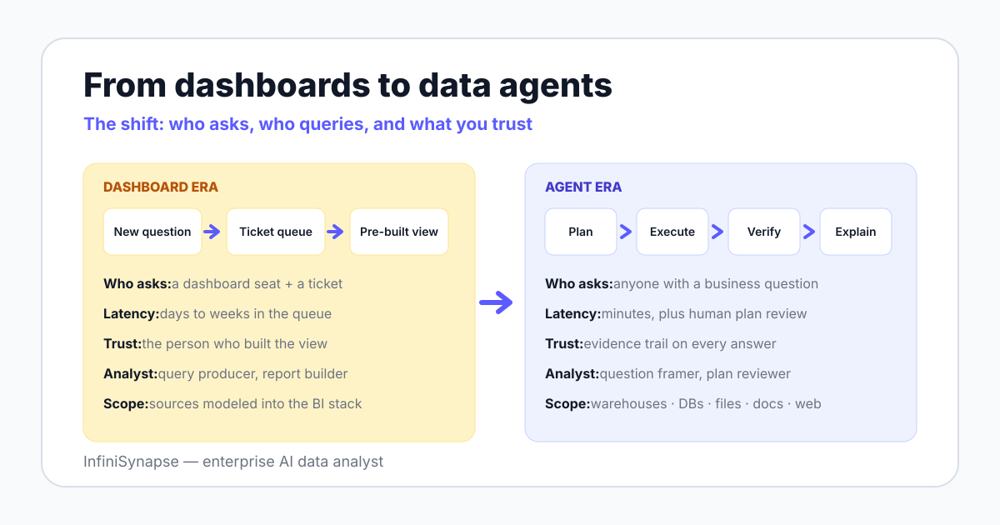

Every data team you have worked on runs a queue. The "quick data pull" waits behind sprint work, the new question waits behind the quick pulls, and by the time the answer lands, the decision was often made without it.
Dashboards were supposed to fix this, and for known questions they did. But a dashboard is a cache of answers to questions someone predicted at build time — ask anything new and you are back in the queue.
The industry has treated this as normal for so long that we budget for the backlog instead of questioning it. Gartner coined "augmented analytics" in 2017, and nearly a decade later the standard fix is still the same: hire more analysts, build more dashboards.
This page is the argument for a different contract between questions and answers. If you want the neutral category definition first, start with what is a data agent — this essay is its opinionated companion.
The manifesto stands on five arguments. Each is sourced and stated plainly enough that you can disagree with it precisely.
On the BIRD benchmark, human data engineers reach 92.96% execution accuracy while models still trail that bar. Look at the failure cases and the pattern is plain: systems stumble on messy schemas and undefined business terms, not on SQL syntax.
A model that does not know your company defines "active user" as 30-day rolling will compute the 7-day version with full confidence. That is a context failure, and model scale does not fix it — retrieval of data dictionaries, metric definitions, and past cases does.
This is why serious systems put retrieval and agent memory at the center of the architecture, not the model. The model is the engine; context is the fuel.
A dashboard encodes the questions your team knew to ask when it was built. It is a snapshot of past curiosity, refreshed on a schedule.
New questions — the ones that follow a surprise, a competitor move, an anomaly — have no tile. Since 2017 the industry has added assistance to BI under the augmented analytics label, but a human still drives every step, so the queue survives; we unpack that boundary in AI-native vs augmented analytics.
Watch a good analyst work: question, plan, query, sanity check, re-plan, query again, explain. The ReAct paper (2022) formalized why this loop beats single-pass generation — interleaving reasoning with actions measurably reduces error.
Anthropic's Building Effective Agents draws the same line: agents are LLMs dynamically directing their own processes and tool usage. Agentic analytics is that loop with data permissions and a human review gate attached.
In the dashboard era you trusted a number because you trusted the person who built the view. In the agent era, trust must attach to the artifact itself: the plan, the queries, the checks, and the sources behind every answer.
Regulators have already moved. The NIST AI Risk Management Framework (2023) organizes AI governance into govern, map, measure, and manage, and the EU AI Act entered into force on 2024-08-01 with obligations phasing in through 2026-2027.
An answer without an evidence trail is not faster analytics — it is unmanaged risk. This is the core case for explainable AI data analysis.
Both 2025 surveys of the field — LLM/Agent-as-Data-Analyst and A Survey of Data Agents — describe the same division of labor: agents execute, humans frame questions, govern definitions, and verify. The repetitive layer of the job is what gets absorbed.
An analyst who reviews ten agent plans a day covers more decisions than one who hand-writes ten queries. We map the emerging skill profile in the AI data analyst job description.
Here is the manifesto compressed into seven rows. Each row is a testable difference, not a slogan.
| Dimension | Dashboard era | Agent era |
|---|---|---|
| Who asks | Whoever has a dashboard seat and a ticket | Anyone who can phrase a business question |
| Who queries | Analysts and engineers, via the request queue | The agent, inside permissions you granted |
| Latency for a new question | Days to weeks behind sprint work | Minutes, plus human plan review |
| Scope | Sources modeled into the BI stack | Warehouses, databases, files, documents, web |
| Trust mechanism | The person who built the view | The evidence trail attached to each answer |
| Typical failure | Stale, unused, or contradictory dashboards | A bad plan — caught at the review gate |
| Analyst role | Query producer and report builder | Question framer, plan reviewer, definition owner |

A dashboard is a cache of past curiosity. An agent is a worker for present questions.
Your backlog is the strongest evidence for this manifesto, so measure it: count last quarter's ad-hoc requests and their median wait time. Then pilot an agent on read-only credentials against three of those requests and compare evidence trails, not demo videos.
The skills that compound from here are question framing, metric governance, and verification — the parts agents cannot own. Treat the agent as a junior who never sleeps but must always show its work; your sign-off becomes the product.
Stop accepting "the data team is swamped" as a law of nature. Ask one question of any analytics investment: when a brand-new question arrives on Tuesday, what exists by Wednesday?
A manifesto you cannot argue with is just marketing. Here are the four strongest objections we hear, with what each gets right.
| Objection | What it gets right | What it misses |
|---|---|---|
| "Agents hallucinate" | LLMs do fabricate, and a confident wrong number is worse than a slow right one | Hallucination is a workflow problem with workflow fixes: plan review, verification checks, read-only credentials, evidence trails |
| "Governance has not caught up" | NIST AI RMF is voluntary, and EU AI Act obligations are still phasing in through 2026-2027 | The frameworks exist now — NIST AI RMF (2023) and ISO/IEC 42001:2023 — so teams can govern today instead of waiting |
| "Dashboards still work" | For stable, daily-checked metrics they stay cheaper and faster than any agent | The manifesto argues both-and: dashboards for known questions, agents for new ones |
| "The category is hype" | A 2025 survey literally asks "Emerging Paradigm or Overstated Hype?" — skepticism is warranted | The same survey catalogs working architectures; the answer is scope discipline, not dismissal |
The first objection deserves the most respect, and our position is strict: never deploy an agent whose verification steps you cannot inspect. The safeguard patterns are cataloged in our autonomous data agent guide.
On the second, the vocabulary for managing this risk already exists — the NIST AI RMF and ISO/IEC 42001:2023 give your security team a shared structure. Waiting for regulation to settle is itself a risk decision.
On the fourth, we cite the "Overstated Hype?" survey by name because honest manifestos engage their best critics. Where agents are oversold — full autonomy on write-access production data — we side with the skeptics.
Disclosure, restated: InfiniSynapse sells in this category, so this manifesto is also our roadmap. Judge the argument by its sources, and judge us by the product.
InfiniSynapse is an enterprise AI data analyst — explicitly not NLP2SQL and not ChatBI. The stack follows the five theses: self-developed LLM-Native RAG recalls business knowledge and schema per question, and Plan mode puts a human review gate before anything executes.
InfiniSQL, our LLM-optimized intermediate representation, connects to a multi-source execution layer, so cross-source analysis runs without ETL across Snowflake, Supabase, PostgreSQL, MySQL, and CSV or Excel files. One documented demo joins JD and Tmall platform data with a CSV file by phone number — exactly the shape of question that breaks dashboard-era tools.
Deployment runs where your data must live: private cloud, on-premises, or air-gapped, via Docker Compose, with Windows and macOS clients. The architecture argument continues in our AI-native data platform guide, and the shared vocabulary lives in the data agent glossary.
A manifesto should make falsifiable claims. These are expectations, not statistics — hold us to them.
Take one question that sat in your queue last month, connect a source read-only, and watch the plan-execute-verify loop run on it. The argument either survives contact with your data or it does not.
Try InfiniSynapse onlineLast updated: 2026-06-12 · Next scheduled review: 2026-09-12
This is an opinion essay, and it is labeled as one. Every numeric claim comes from the listed references; product capabilities attributed to InfiniSynapse come from InfiniSynapse product documentation; the cross-source example is a documented product demonstration, not an independent benchmark; predictions are labeled as expectations, not data.
Conflict of interest: InfiniSynapse publishes this manifesto and sells in the data agent category. To reduce bias, the page includes a counterarguments section that quotes the field's skeptics, names the cases where dashboards and BI remain the better tool, and sources every figure externally.
Update cadence: Reviewed every 90 days for terminology, source links, regulatory timeline changes, and schema consistency.